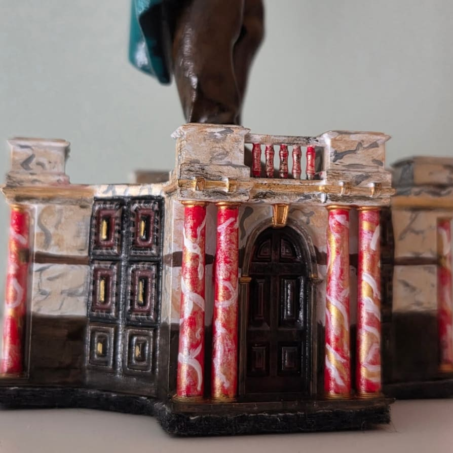
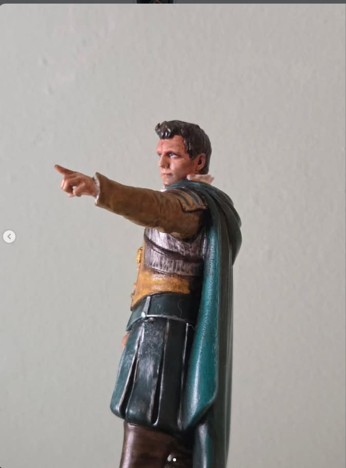
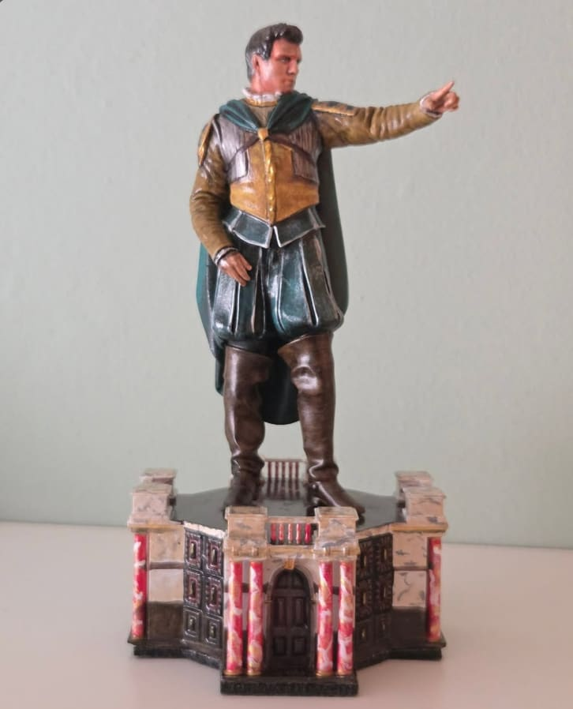
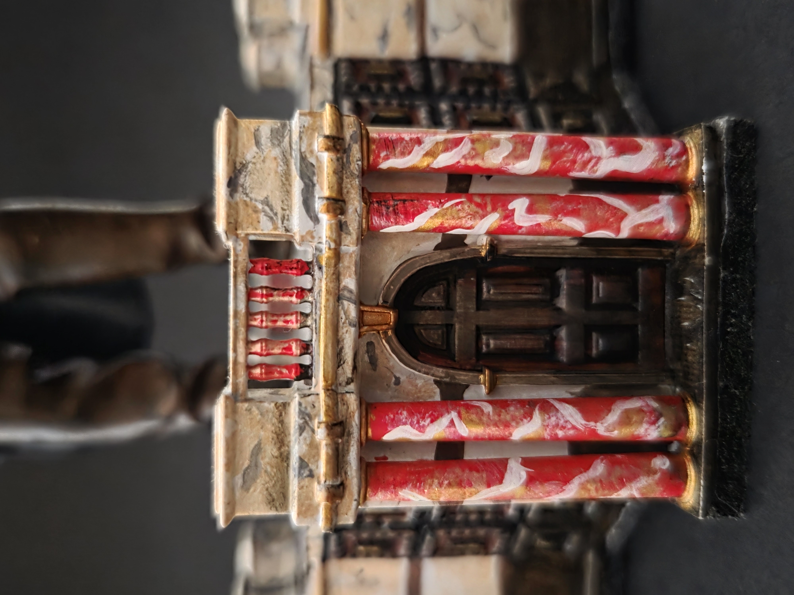

Gallery
Brutus, dargestellt von Tom McKay
Mir hat Tom McKays Interpretation in dem Theaterstück Julius Caesar so gut gefallen, dass ich eine Figur anfertigen musste, um sie zu würdigen.
Die Basis habe ich von Grund auf entworfen, inspiriert von der Bühnenfassade des Shakespeare's Globe, um die Figur des Brutus buchstäblich auf die Bühne stellen zu können.
Die Pose stammt direkt aus dem Stück, einem meiner Favoriten, in dem die Elemente des historischen Kostüms perfekt zu erkennen sind. Wunderbare Interpretation.




